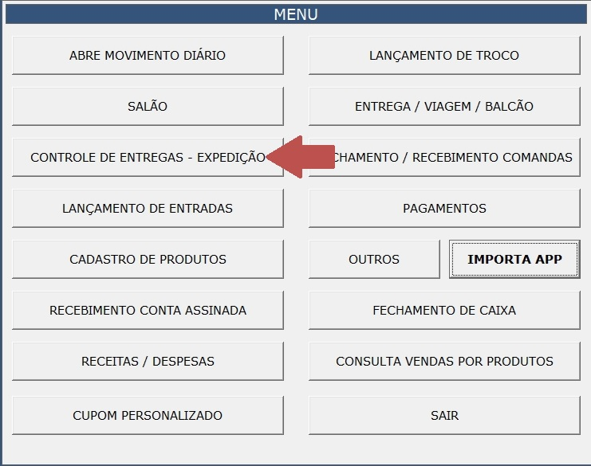

Expedição
No menu principal, clique em "CONTROLE DE ENTREGAS - EXPEDIÇÃO" (flecha vermelha).
A tela a seguir irá abrir. Nela clique no local da flecha verde. Depois escolha o nome do entregador. Aqui também vamos ter as opções
um pedido para "VIAGEM" ou se será consumido no "SALÃO".
No nosso exemplo vamos selecionar o entregador "GILIARD".

A tela a seguir irá abrir todos os pedidos, nela você clica em todos os pedidos que
estão com o mesmo tipo de pagamento. Por exemplo, se o pedido 007 e 008 foram pagos
no PIX, eu clico nos dois pedidos.
Agora clique em "RECEBIMENTO RÁPIDO"

A tela a seguir irá abrir todas as opções de pagamento: PIX, DINHEIRO, CRÉDITO e DÉBITO. Clique na forma de pagamento e escolhida e aperte ENTER.

Agora confirme se o nome do entregador é o que aparece no retângulo em vermelho, caso seja clique em "Sim" (flecha verde).


Para entregador, viagem ou balcão você pode ter vários pedidos com o mesmo tipo de pagamento, selecione todos os pedidos antes de clicar em "RECEBIMENTO RÁPIDO" e economize tempo!
A tela a seguir irá abrir. Nela clique no local da flecha verde para abrir as opções de entrega. No nosso exemplo é um pedido para a viagem que o cliente irá retirar no local. Clique em viagem (flecha laranja).

Na imagem a seguir vemos no retângulo laranja os valores da Soma Total da Taxa de Entrega,
O Total a receber em aberto, o Total de Comandas e o Valor Total de Comandas.
Cada vez que você escolher um entregador ou os tipos viagem e salão, o total irá aparecer
no local do retângulo laranja.

Agora confirme que as comandas selecionadas (as linhas aparecem com fundo em laranja) foram pagas usando o tipo de pagamento selecionado. Caso seja correto, clique em "Sim" (flecha verde), do contrário, clique em "Não".